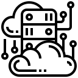

Doriath Technology often sees enterprises tangled in complex data migration projects that drain IT resources, delay implementations, and frustrate both business users who are ready for the new functionality and IT developers choking on the intricacy of custom-coded, data migration routines. Careful planning, sound strategy, knowledge of client system domains enable Doriath Technology to successfully go through the migration process.
We know that data migration is more than moving data from existing systems to target systems. Functionality as well as business processes also need to be considered while implementing the migration strategy. While performing data migration, operations such as profiling, analyzing, cleansing and transformation need to be considered along with extraction and load operations.
Doriath Technology will tailor your data migration needs depending on your choice, technical feasibility, cost and risk of migration.
Doriath Technology's Consultancy hourly rate is considerable and it ranges between £100 and £160.

Doriath
Technology
